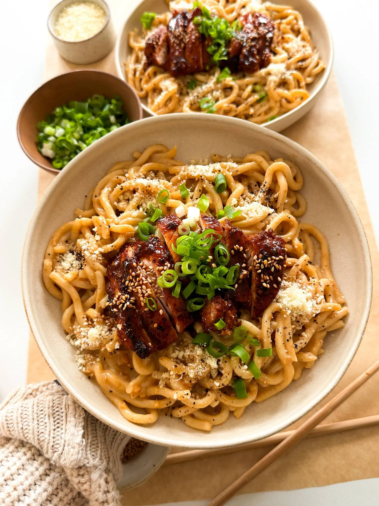

DINNER | MAIN COURSE
GARLIC NOODLES WITH TERIYAKI CHICKEN
PREP TIME: 15 MINUTES
COOK TIME: 30 MINUTES
TOTAL TIME: 45 MINUTES
YIELDS: 2 TO 3
Garlic noodles with teriyaki chicken
is the ultimate comfort dish bursting
with so much umami flavor! From the
creamy butter sauce coating the udon
to the sweet and savory teriyaki sauce
glazing the BBQ chicken, it is absolute
perfection from start to finish.
Inspired by one of my favorite restaurants
in Orange County, I hope you love this as
much as I do if not more!
JUMP TO RECIPE
GARLIC NOODLES WITH TERIYAKI CHICKEN
PREP TIME: 15 MINUTES
COOK TIME: 30 MINUTES
TOTAL TIME: 45 MINUTES
YIELDS: 2 TO 3
Garlic noodles with teriyaki chicken
is the ultimate comfort dish bursting
with so much umami flavor! From the
creamy butter sauce coating the udon
to the sweet and savory teriyaki sauce
glazing the BBQ chicken, it is absolute
perfection from start to finish.
Inspired by one of my favorite restaurants
in Orange County, I hope you love this as
much as I do if not more!
INGREDIENTS
CHICKEN
-
1 pound boneless skinless chicken
thighs, about 4 pieces
- 1/2 tablespoon chili powder
- 1 teaspoon smoked paprika
- 3/4 teaspoon onion powder
- 1/2 teaspoon salt
- 1/4 teaspoon black pepper
- 1 teaspoon red pepper flakes
- 1 tablespoon olive oil
TERIYAKI SAUCE
- 2 teaspoons sesame oil
- 1/4 cup low-sodium soy sauce
- 2 tablespoons rice vinegar
- 3 tablespoons brown sugar
- 1/2 teaspoon black pepper
- 1 tablespoon minced garlic
- 2 teaspoons minced ginger
- 1 teaspoon cornstarch
- 1 tablespoon water
GARLIC NOODLES
- 2 7-ounce packages cooked udon
- 6 tablespoons unsalted butter
- 1 1/2 tablespoons minced garlic
- 3 tablespoons low sodium soy sauce
- 1 tablespoon oyster sauce
- 1/4 cup heavy cream
- 1/4 cup grated parmesan
- dash of salt, to taste
- black pepper, to taste
- 1 teaspoon white sugar
FOR SERVING
- green onions, chopped
- toasted sesame seeds, garnish
INSTRUCTIONS
MAKE THE TERIYAKI CHICKEN
- To a bowl, add the chicken thighs
and season with chili powder,
smoked paprika, onion powder, salt,
black pepper, red pepper flakes, and olive oil.
- Mix together to marinade evenly and set aside.
-
To another bowl or measuring cup, add the
ingredients for the teriyaki sauce: sesame
oil, soy sauce, rice vinegar, brown sugar,
black pepper, minced garlic, and minced ginger.
Whisk together well.
-
Heat a large frying pan over medium-high heat.
Add the chicken thighs in, making sure not to
crowd them.
-
Sear on one side for 2 to 3 minutes and
then flip over and repeat. Then drop the
heat to medium or medium-low for 2 to 3
minutes again just until the chicken is
fully cooked in the center.
- Once cooked, remove the chicken from the pan.
-
To the same pan, add in the teriyaki sauce.
Bring to a soft boil and then drop the heat
to simmer for 2 to 3 minutes.
-
Mix together the cornstarch with water to
make a slurry and add it to the pan.
Stir together until the teriyaki sauce thickens.
-
Add the chicken back in and fully coat in the
teriyaki sauce on both sides. Take off the heat.
GARLIC NOODLES
- Heat a pan over medium heat and add the butter.
-
Once melted, add in the minced garlic and saute
for 2 to 3 minutes until fragrant and toasted.
-
Add soy sauce, oyster sauce, cream, parmesan,
salt, black pepper, and white sauce. Mix together well.
-
Toss in the noodles to fully coat the udon in the
butter sauce.
-
Plate the noodles with chicken on top and finish
off with a garnish of green onions and sesame
seeds to enjoy.